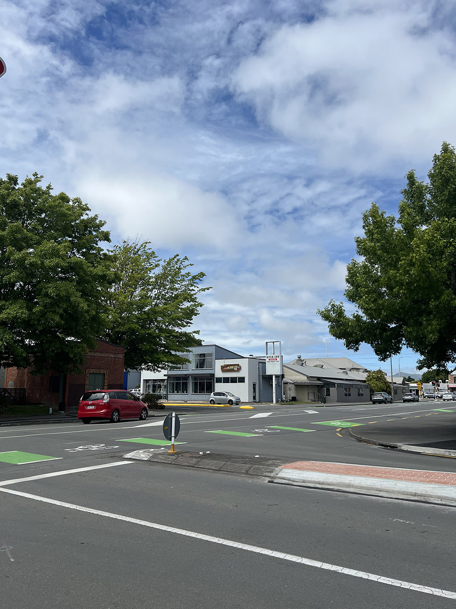
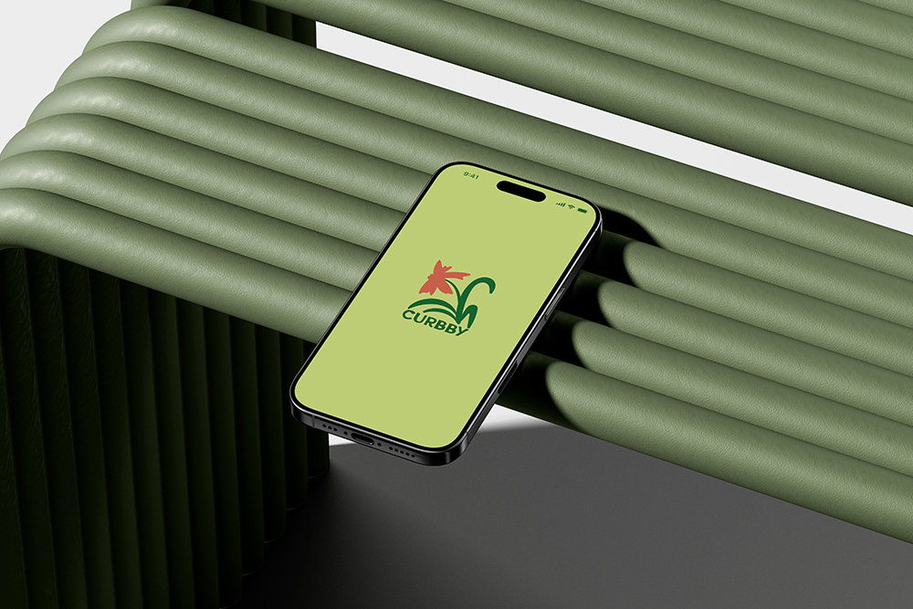
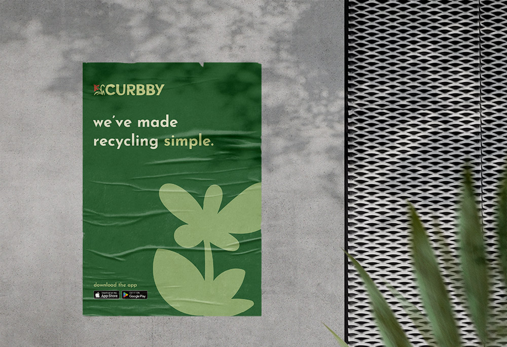

Curbby
Making recycling easy!
By Emma
Curbby is a fun and friendly brand focused on making recycling simple. We want to reduce the time it takes to recycle responsibly allowing people to easily reach their sustainability goals.
Background
This idea was inspired when looking around our Upper Riccarton area, it was observed that a lot of people were putting items that could be recycled straight into the trash. With a lack of recycling bins in public places and confusing recycling rules it seems easier to just throw recyclables into the waste bin. The Curbby app serves as a perfect solution as it condenses all recycling needs into one simplified place making the process quick and stress free as possible, helping people feel more motivated to recycle.
Promotional Video
The explainer video is a fun, friendly way to encourage users to easily reach their recycling goals by downloading our app.
How it works!
Our app makes recycling simple by being able to easily search up items and set reminders to log your items before bin day!
The Campaign
The campaign is aimed to show the brand's friendly side while maintaining our iconic branding style. The simple design helps to reinforce our message of making recycling as easy as possible.
Why support us
Our main goal is to help our users reach their sustainability goals by making the process as simple as possible through using our app. By supporting us, you're also helping our community to protect the environment and make Bush Inn a more pleasant place to be!
Help us, help you, help the environment!